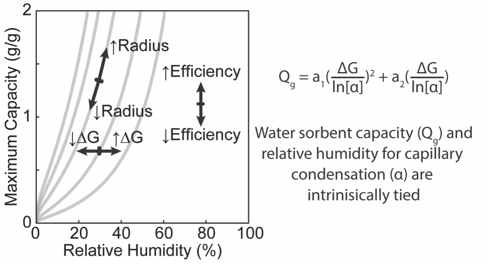
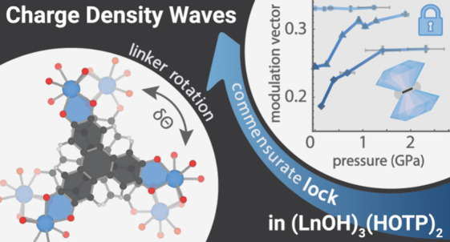
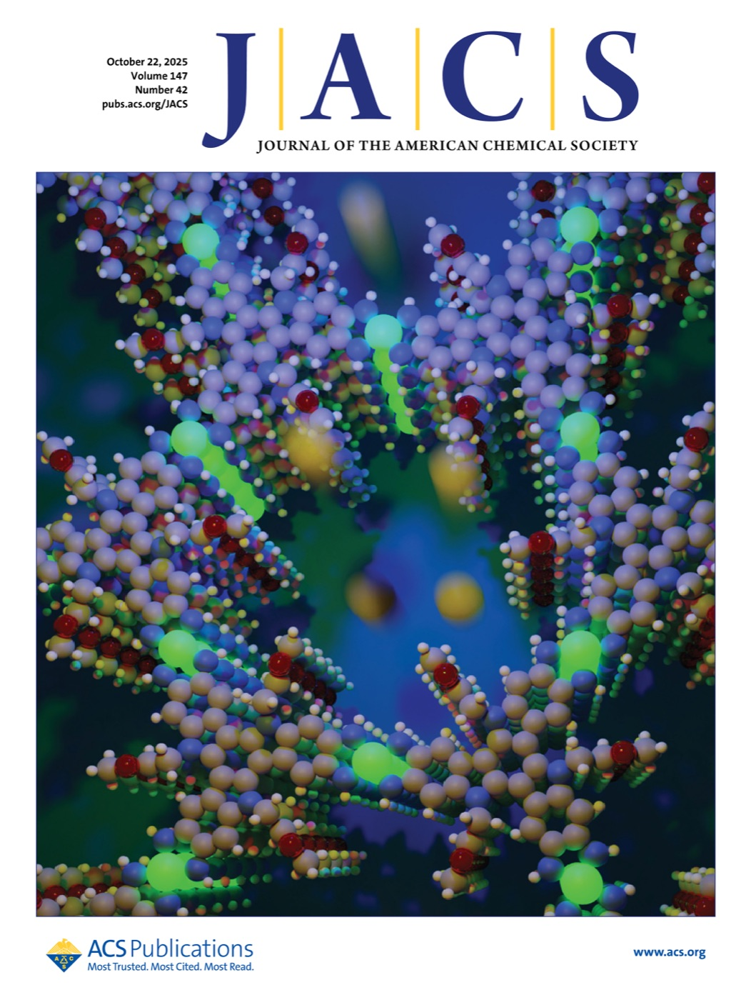

Julius Oppenheim
I am a chemist and crystallographer. At Princeton I run the single-crystal X-ray diffraction facility in the Department of Chemistry and work as a Research Scholar in Professor Mircea Dincă’s group on metal–organic frameworks for energy and environmental applications.
My research focuses on water sorption, emergent quantum phenomena, and understanding fundamental charge transport in porous materials. I have a particular fascination with materials whose structures cannot simply be understood by their average structure.
I received my Ph.D. in Chemistry from MIT in 2024, working with Prof. Mircea Dincă, and my B.S. in Chemistry from Caltech in 2019, where I did research with Prof. Harry Gray, Prof. William Goddard III and Prof. Paul Asimow.
Featured
-

-

Corresponding authorEvidence for an Electronically Driven Charge Density Wave in a 1D Metallic MOF
-
